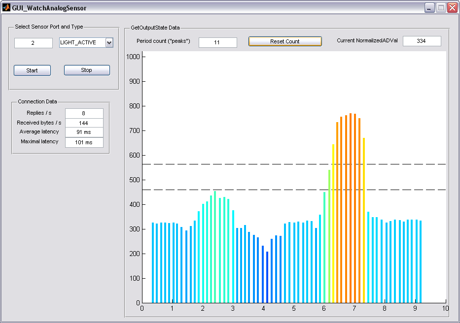

Watch Sensor GUI
"Watch Sensor GUI" is a tool to read the NXT sensors and monitor the data values.

Select Sensor Port and Type
At first a sensor port and the sensor type have to be given. The information polling (reading) is started and stopped by pressing the "Start" and "Stop" button.
GetOutputState Data
This display monitors the data values read by the selected analog sensor over time. The "Reset Count" button can be used to reset the period counter. This counter displays the sensor's .ScaledVal. Its InputMode is set to PERIODCOUNTERMODE. Basically the sensor counts the times that the value (which you can see in the .NormalizedADVal field) jumps above the 45% threshold and stays above it, until it goes down again. So the picture above shows exactly one period.
Connection Data
Information about the communication channel is given in group field "Connection Data".